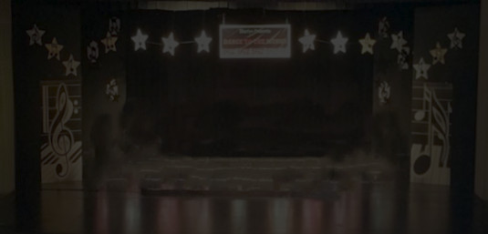

<link rel="import" href="/lib/polymer/polymer.html">
<link rel="import" href="/lib/iron-resizable-behavior/iron-resizable-behavior.html">
<link rel="import" href="/lib/iron-ajax/iron-ajax.html">

<dom-module id="light9-paint">
  <template>
    <style>
     #parent {
         position: relative;
         height: 500px;
     }
     #parent > * {
         position: absolute;
         top: 0;
         left: 0;
         width: 100%;
         height: 500px;
     }
     svg > path {
         fill:none;
         stroke:rgba(255, 255, 255, 0.66);
         stroke-width:80;
         filter:url(#blur);
         stroke-linecap:butt;
         stroke-linejoin:miter;
         stroke-miterlimit:4;
     }
    </style>
    <iron-ajax id="solve" method="POST" url="../paintServer/solve"></iron-ajax>
    <div id="parent">
      
      <svg id="paint" viewBox="0 0 500 221">
        <defs id="defs12751">
          <filter
              style="color-interpolation-filters:sRGB"
              id="blur"
              x="-1.0"
              y="-1.0"
              width="3.0"
              height="3.0"
          >
            <feGaussianBlur
                stdDeviation="20"
                k2="1.01"
                result="result1"
            ></feGaussianBlur>
          <!--   <feMorphology
                in="result1"
                operator="dilate"
                radius="3.39"
                result="result3"
            ></feMorphology>
            <feMorphology
                in="result1"
                radius="3.37"
                result="result2"
            ></feMorphology>
            <feComposite
                in="result3"
                in2="result2"
                operator="arithmetic"
                k1="0"
                k2="1.00"
                k3="0.43"
                k4="0"
            ></feComposite> -->
          </filter>
        </defs>
      </svg>
    </div>
  </template>
</dom-module>
<script src="paint-elements.js"></script>
